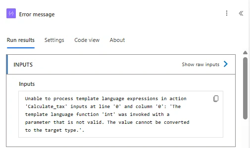

- Power Automate
- Level 4 · Reliable flows · 1 of 7
Scopes and the try / catch pattern
By default, when one step fails, every step after it is skipped and the run ends Failed: nobody's told and nothing's cleaned up. Try / catch / finally fixes that with three Scope actions.
The pattern
WhatThree scopes: Try holds the work, Catch handles failures, Finally always runs.
WhyOne place to catch any failure, find the error and tell someone, instead of a failure branch on every action.
DemoAn order with the amount not a number makes Calculate tax fail.
Try / Catch / Finally
Try: Read order → Calculate tax
Did Try fail or time out?
Yes
Catch: find the error → alert → log
No
Catch is skipped
Finally: runs after Catch whatever happened (clean-up, summary)
| Scope | Contains | Run after |
|---|---|---|
| Try | The real work | The trigger |
| Catch | Find the error, alert, log | Try has failed or has timed out |
| Finally | Clean-up, summary, log entry | Catch: all four outcomes |

Finding out what went wrong
Inside Catch
result('Try'): every action in Try, with status and errorFilter array Failed actions:
equals(item()?['status'], 'Failed')first(body('Failed_actions'))?['error']?['message'] → the real messagefirst(body('Failed_actions'))?['error']?['message']| Piece | What it does |
|---|---|
body('Failed_actions') | The failed actions from result('Try'). |
first(...) | The first one: Calculate tax. |
?['error']?['message'] | Its error text. |

Why the run says Succeeded
Run status is judged by the last steps
| Scope | Status |
|---|---|
| Try | Failed |
| Catch | Succeeded |
| Finally | Succeeded |
| Run | Succeeded ← misleading if Catch didn't fix it |
That's fine when Catch really handled the problem. When it didn't, end Catch with Terminate (Failed) so monitoring sees the truth. See Error alerts and Terminate.
New to this? Start from the basics optional
Scope: a container that groups actions; its status is the combined status of its contents.
result('Scope'): the outcome of every action inside a scope.
Common mistakes
- Catch that only runs on has failed, missing timeouts.
- Alerting without the real error message.
- Leaving failed runs marked Succeeded.
- Using
result()on a scope that isn't the direct container.